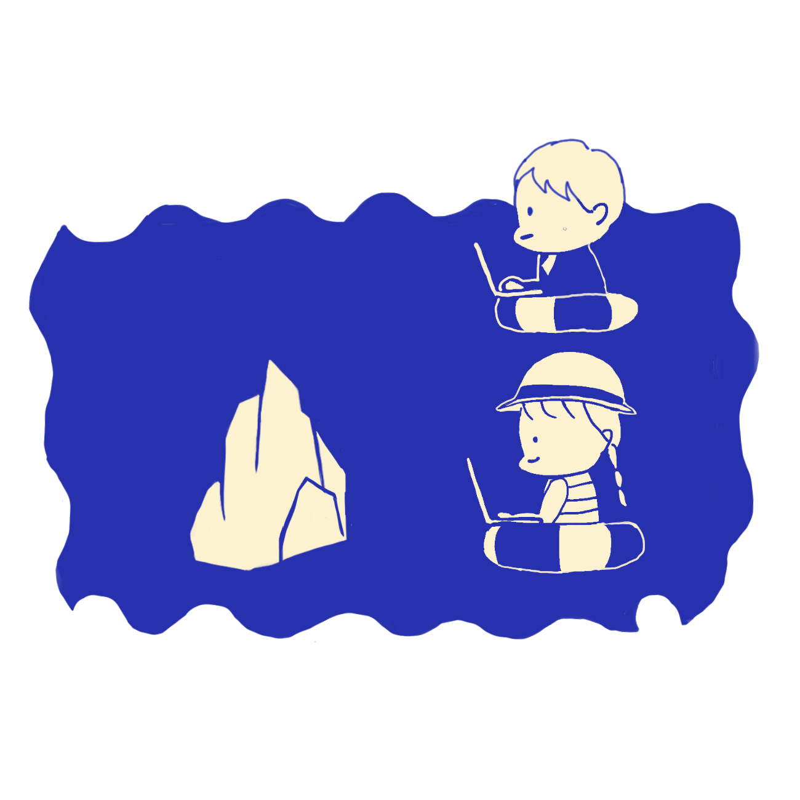

仕事との出会い
- ーーー
- 今日は来てくださってありがとうございます。
よろしくお願いします。早速なんですけど、
20代の転機って、何ですか。
- みのり
- 20歳っていうと、ちょうど就職の時でね。
私が（短大を）卒業する1年前が1993年で、
バブル崩壊 のときだったの。
やっぱり会社が倒産して、
1番困ったのが雇用止めになる。
そこで一番影響受けたのが女子学生なのね。
当時は、確か男女雇用機会均等法が
制定されてすぐで、改正を重ねてるんだけど。
女性って男性より長い時間働けないし…。
- ーーー
- まだ、男女で格差があった時代だったんですね。
- みのり
- そうそう。今はないけどさ、
総合職と一般職って分かれてて、
総合職っていう、基本的には事務職をする仕事が
一般的な女子の就職先でね。
でも、そういうのが一切なくなっちゃって。
私が会社に資料請求しても、
まず資料が届かないし、来ないのね。

- ーーー
- え！じゃあ、就活どうしたんですか！？
- みのり
- 結構やばくて。実際に内定もらったのが、
日本生命の営業だけだったの。
だけど、うちの母や叔父がね、
営業はいずれは歩合制になるから、
きつくなるっていうの。
でも、就職先ないわけよ。
就職浪人するような時代でもなかったのね。
私は教育学部だったから、
先生の免許取る学部だったんだけど。
- ーーー
- 教育学部に行ったのにエンジニアに？
- みのり
- そう、そこなんだけど。
私が短大でとっている授業の中に、
プログラミングの授業があったの。
小中学校でパソコンが普及した時のために、
教材をプログラミングして作りましょう
っていう内容で。その先生の知り合いが
ソフトウェア会社をやっていて、
今後、女子も長く働けるようになるから、
女子を積極的に雇用したい。
知らなくてもいいから、
真面目で根気のあるような人がいいっていう
お話があって。
- ーーー
- へぇ、なるほど。
そこがプログラミングとの出会いだったのか。
- みのり
- うん。私は、その話を学校で聞いた時は
なんとも思わなかったんだけど、
同じく就職決まってない友達に、
一緒に受けようよって言われて。
親に言ったら、先生の紹介だったら
いいんじゃないって言われたから
受けたのね。そしたら受かって、
で、入ったの。普通、就職する時に理転って、
ほぼほぼないじゃん。
- ーーー
- 確かに、文系の人が就職の時に理系の仕事を
選ぶことってそうそうないですよね。
- みのり
- だからってさ、ほんとありえないんだけど(笑)
今思えば転機だけど、当時は流されて入って。
その当時はさ、知ってる？
ポケベルの時代だから。(笑)
だから自分で好きなように情報を
取れないわけだ。新聞かテレビかでしょ。
パソコンも持ってなかったのね。
ワープロって言って、
ワードが1つの端末になってるような
パソコンがあってそれを使ってた。
- ーーー
- ポケベルもワープロも聞いたことはあります！
- みのり
- ほんと？だから面接で、
パソコンやったことありますか。って言われて、
オアシスならありますって、
その、、ワープロメーカーを言ったの。
そしたらニコニコされて（笑）
でも、それで入るに入れたんだよ。
- ーーー
- うわー、よかった。
実際に就職してからはどうだったんですか。
- みのり
- 結局研修とかしても全然わかんないのよ。
一緒に入る人って、工業学部の人とか、
あとは高専とかの人ばっかりだから、
業務内容はできなくても、
プログラムは作れるでしょう。
で、講師の先生が言ってることわかるじゃない。
私はもう全然わかんないから、
どうしようと思ったの。
- ーーー
- そりゃあそうですよね。
- みのり
- でも、一応先生から紹介の形で入ったから、
3年は勤めなきゃいけないっていうのが
社会の暗黙のルール的な感じでね。
だから、3年は仕方ないからやるしかない
と思って、やってたんだけど、
結局プログラム作るって物作りと一緒で、
何もないところから自分で作って、
意外にね、楽しくなってくるの！
やってる時は、プログラムを自分で
ひたすら向き合って作るだけだから、
意外に性に合ってて。
- ーーー
- みのりさん細かい作業好きですもんね。
- みのり
- そうなの。それがどんどん大きくなっていけば、
当然達成感みたいなのも大きくなっていくし。
できれば、「やった！やべ、私天才かも。
やったことないのにできた！」みたいな。(笑)
だんだん楽しくなっていくの。
そのうちやっぱり、なんて言うんだろう、、、
社会を動かしてるような感じを感じてきて。
- ーーー
- 社会を動かしている？
- みのり
- そう、だって何も知らなかった頃は、
画面をピッと押せばピッてなるって
思ってるじゃん。
その中に何が入ってるかなんて、
ちっちゃいおじちゃんが入ってんのかな、
ぐらいじゃん。
今までどうも知らなかったことが、
こういう仕組みなんだってなんとなくわかる。
そうすると、社会のみんなが知らないところを
知ってるような、優越感があって、
楽しくなった。
- ーーー
- なるほど、そういう意味なんですね。
プレッシャー

- みのり
- ただね、仕事はきついのね。
当時、女性は早く帰れるはずだったんだけど。
私は専門職だったから、専門職としての
時間の縛りで。残業は女子でも関係なくて。
だから、徹夜とかもあったし。
- ーーー
- それは母から聞いたことがあります。
- みのり
- 最初はシステムセンターにいたんだけど、
技術職の人しかいないセンターだから
もうほんとにトイレも男性のトイレを
無理やり仕切ったような感じで。
泊まるところも、大部屋みたいな和室があって、
そこにみんなお布団敷いて寝てた。
- ーーー
- うわあ、ちょっとしんどいですね。
- みのり
- 仮眠の時、そんなとこ女子が行けないじゃん。
あせん、会社の人がビジネスホテルを
取ってくれたけど。ほんと、そもそも
女性が働くような環境じゃなかったな。
だけど、仕事内容は楽しかった。
ただ、プレッシャーはすごくあった。
- ーーー
- 具体的にどんなプレッシャーが？
- みのり
- うーん、やっぱ、何かあると
すぐニュースになるような感じで。
今だと、就職決まんなくてもフリーターでも
いいかな、とか色々と選択肢があるけど、
当時はそんな考えなかったのね。
もしかすると、都市部ではそういう女性もいたかもしんないけど、地元の千葉みたいな場所でそんな考えない。スマホもないしね。
だから、もう卒業したら、ちゃんとした会社に
終身雇用で雇われて、正社員でいるのが正しい
っていう考えしかなかった。
- ーーー
- 周りの環境が影響していたんですね。
- みのり
- だから、きつくてもやめるわけには
いかなかったし。今だと転職って
キャリアアップかもしれないけど、
当時はキャリアダウンとしか思わなかった。
あの人はあそこでダメだったんだって
思われるから。
だから、転職も考えられなかったし。
- ーーー
- 時代の影響も…。
- みのり
- そうねえ。
結局、子供産んで、1年休んで、復職したのね。
- ーーー
- それは何歳ですか。
- みのり
- それね、32歳。30歳ぐらい結婚した時に、
やっぱり周りは結婚して仕事を辞める人が
多かったけど、その時、会社に女性を
もっと雇用しようみたいな流れがあって。
出産は別として、結婚して辞める女性って
少なくなってきたかから、
もっと優秀な女性雇用しようみたいな形で。
やっぱり、会社としてはそういうモデルがいた方がいいわけ。
- ーーー
- 企業の紹介ページに載るような人ってことですよね。
- みのり
- そういう感じ。こういう風に働いて、
若くて働いてる人いますよ、みたいな。
ちょうど年齢的にリクルート活動とかもやって。
実際、そのおかげで役職ももらっちゃって。
ちょっと上とか先輩を抜かして係長になって。
女性でも役職つきます、結婚しても働いてます。
いずれ出産を考えてますっていうモデルみたいな
位置にいたのね。
- ーーー
- えー、すごい！
- みのり
- それで、新しい女性とか入ってきたら、
例えば、時間短縮制度をなんとかしてほしいとか
そういうのを言ったりとかね。
会社の制度は意外にも言えば変わるんだけど、
モラルがね…。今は男性でも育児休暇とるけど、
当時のおじさんはそういう感じじゃないから、
時間短縮制度使ってるのにも関わらず、
残業してたりとかね。
- ーーー
- 制度とは名ばかりにって感じですね。
- みのり
- うん、なかなか周りの環境は変わらない。
制度は変わっても、周りの環境が
なかなか変わらなくて、ちょっと大変だったな。
実際辞めたのは、子供が幼稚園入った時かな。
- ーーー
- なんで辞めたんですか。
- みのり
- それがね、子供が幼稚園入ったら、
みんなお母さんが送り迎え行くじゃん。
それで、なんかいいなと思っちゃったの。
- ーーー
- えー！
- みのり
- サボれるからじゃないよ。(笑)
やっぱ、子供といて、同年代のお母さんと
喋って楽しいな、みたいな。
子供も、ママがいた方がいいってちらっと
言うわけじゃん。
そりゃあそうだよねって思って、
辞めるって決めた。
やっぱりこの業界って結構進捗が早いから、
2年経って復職しなかったら難しいよ。
- ーーー
- 情報が早いから。
- みのり
- そうそう。入ってても言語を常に3つぐらい
覚えさせられるのね。言語は意外に覚えられる。
覚えるコツみたいなもんが出てくるから。
だけど、やっぱり大変だよ。
常に勉強になっちゃうからね。
でも、やりがいはある。楽しい。
だから、事務職よりは何かやりがいを
感じるんじゃないかなって思う。
- ーーー
- そういう、作る仕事ですか？
- みのり
- そう。やっぱ何かを作ったり、
それこそ農業でもいいんだけどね、
何もないところから何か作るっていうのは、
何かやっぱり楽しいと思う。
好き嫌いもあるけどね。
- ーーー
- 私も作る作業好きなので共感できます。
流されるコツ
- みのり
- ただね、結局私は、今振り返れば
そこが転機だったってなるけど、
当時はここが転機だとか思ってるわけじゃ
なくて、ほんとに流されてるのね。
でも流されるのも意外に大変で。
みんな、道を切り開くのがポジティブで、
流されたら意思がない、
ネガティブな感じだけど、
流れに乗ってバランスをとるってのも
なかなか厳しいわけ。
- ーーー
- バランスをとる、とは？
- みのり
- だって前を見てなかったらさ、
岩にぶち当たるかもしれないじゃん。
バランス崩したら、川底に沈むわけでしょ。
流されてるっていうけど、流されても
ちゃんとできるにはなかなか難しいし。
でも、自分ではどうにもできないところって
あるじゃん。例えば、バブル崩壊とか。
- ーーー
- そういう、社会情勢とかってことですよね。
- みのり
- そういうこと。自分はこれだけ頑張って、
こうやってこの会社に入りたいと思って
勉強してきましたって言っても、
就職先なかったら、どうにもならないじゃない。
だから結局、固定のところは動かせないから、
動かせるところで動かすしかなくて。
そこを切り替えられるかだよね。
もし就職するときに私はこれだって決めて、
でもそこがどうしても難しかったりした時に
どうやって、動けるか。
そこが柔軟じゃないと
後悔しちゃうかもしれないよね。
- ーーー
- なるほど、
状況に合わせて行動を変えなきゃですね。
- みのり
- そうそう。
ただ、ちゃんと周りの状況を見てないとね。
- ーーー
- 周りを見てないと行動も何もないですもんね。
じゃあ、みのりさん。
教育学部に入ったとおっしゃっていましたが、
もともと教師になる夢があったんですか。
- みのり
- それも流された。私、高校は英文科だったの。
結構、英語の授業がいっぱいのコースだったの。
だから、なんとなく大学も英文科とかに
行くのかなって思ってた。
- ーーー
- じゃあ何で高校で英文科に進んだんですか？
- みのり
- 普通科を受けたんだけど、入学したら
成績がちょっと良かったから、
英語コースに入れますよって言われて。
で、入ったの。興味はあるよね。
やっぱ英語ってかっこいいし。
- ーーー
- 私も英語のかっこよさにひかれて
英語が強い高校を選びました(笑)
- みのり
- やっぱそうだよね！
だから、大学も英文科行くのかなと思ってた。
でも、当時の英語の担任の先生が
小学校の先生を経験していた人で、
あなたはすごく小学校の先生に向いてる。
あなたみたいな小学校の先生がいたら、
すごくいいと思うって言ってくれて。
それまで、何もやりたいことがなかったわけ。
そこで、急にさ、小学校の先生っていう
職業が出てきたの。もう天職だと思ったわけ。
私、子供好きだし、みたいな。

- ーーー
- 最高じゃないですか！
- みのり
- そう、親からも、そんな変な英語だかなんだか、
よくわかんないやつより、教師はいいって。
だから教育の大学にした。
でも、教員採用試験落ちたんだよね…。
- ーーー
- あら…。
でも、落ちたおかげと言っては何ですが、
エンジニアの仕事と出会うことが
できたんですもんね！
- みのり
- それはそう(笑)
どっちの道に進むのも正解だったんだと思う。
- ーーー
- うんうん、なんか、みのりさんは
人生のターニングポイントが
いっぱいあるみたいですね。
- みのり
- そうだね、流されてたらいつの間に(笑)
とにかく、今みたくそんなフレキシブルに
考えられなかったの。
絶対就職して終身雇用じゃなきゃいけないし
っていう感じの社会の空気があった。
派遣とかもやっぱりすごい切られてたし。
やっぱり正社員じゃなきゃダメみたい。
便利とは
- みのり
- プログラム作ってる時にね、
自動入力システムを取り入れるって言われて。
そのプロジェクトに入って、完成して終わって。
数日後に高校の友達にたまたま会って、
今仕事何してるのって言ったら、
今就活してんだよねって。
派遣切られて、自分の会社の入力やってたんだよ
って言われて。
そこでわかったの、派遣が入力してたことを。
自動入力を取り入れることで、派遣を切って
利益を上げるっていう仕組みだったみたい。
- ーーー
- うわ、そんな裏の仕組みが…。
- みのり
- 派遣を何千人も切るって、知らなかった。
そういうことだろうって、
想像すればできたんだろうけど。
その友達に今何やってんの、って聞かれて、
うん、普通のolって答えちゃった。
- ーーー
- いや、そりゃあ素直に答えられないですよね。
- みのり
- olかー。いいよね、正社員。派遣厳しいわ
って言われて。もうすごいびっくりして。
私が作ったプログラムが
彼女の仕事を奪ったんだ、みたいな。
- ーーー
- 受け入れ難い事実ですね…。
- みのり
- 会社行って、やばいっす、
私、友達の職業奪いました、怖いです
とか言って。そう、商品を作るだけじゃなくて、
そういうこともあるよね。
だって便利にするってことは、
その分今までのものをなくすわけでしょ。
だから便利もどうかな、と思う。
- ーーー
- 便利っていいイメージしかなかったです。
- みのり
- 今レジって全部無人じゃん。
あそこでさ、ピッピッってレジ打ちやってる
おばちゃん、どこ行くの、ってなるじゃん。
- ーーー
- 確かに、仕事なくなっちゃう。
- みのり
- でしょ。だからまた別の雇用が
生まれるんだろうけどね。だから怖いよね。
よくよく見てみると、なんでも便利になってる
けど、その影に困ってるおばちゃんが
いるかもしれない。
- ーーー
- そんな見方したことなかったな…。
でも、そういうことが起こりつつも、
仕事にやりがいは感じていたんですよね？
- みのり
- もちろん！
やっぱり、職場にいる人と24時間一緒だから
仲間意識みたいなのが出てきて。
毎日文化祭の前日みたいな。
でも、そういうのが結構好きで。
やばい、もう明日だ。寝ないでやろうみたいな。
そんな感じのノリが私の性に合ってたから
楽しいと感じてた。それで病む人もいたけれど。
- ーーー
- 実は私もその空気感嫌いではなくて。
結構好きで、めちゃくちゃわかります。
- みのり
- だよね、あなたもそうだと思った！
当時の私は従順で何も知らないからね。
知ってたら、何か反発とか要求があったかも
しれないけど、何も知らなかったから。
あの中に入ってるだけだったから。
- ーーー
- 流れに乗ったんですね。
社会人になる
- みのり
- だから、学生時代までは平和だった。
だって、全部先生と親がやってくれるし、
行けって言われたところに行って、
座れって言われるから、座って。そんな感じ。
それなりに勉強もしたし、
やることもやったけど、
でも今思うと大して苦労はしてないね。
あんまり自分でこうしたいとかなかった。
その分、会社入ってからがほんとに厳しかった。
仕事しなきゃいけないじゃん。
だって、毎月お給料入ってくるんだよ。
- ーーー
- 対価にあった仕事をしないとですもんね。
- みのり
- うん。私労働してないのに、もらっちゃって
いいんですかって最初の頃は思ったし。
だから自分から資料を持ち帰って、
家で読んだりとか。
だから、会社に入って、やらなきゃと思って。
やっぱりどっかで人生やらなきゃいけない時が
来るんだって気づいた。
- ーーー
- へぇ…。なんか、ちゃんと社会人になれるか不安になってきました。
- みのり
- さっきも言ったけど、私は仕事にやりがいを
感じて続けることができたから、
やらなきゃいけない、をネガティブに
捉えないで！きっと自分に合う仕事が
見つかれば楽しめるよ！
- ーーー
- そっか、そうですよね！
来年の就活頑張ろうかなって思えました。
- みのり
- そうじゃん、頑張ってね！もう一時間半か！
- ーーー
- ほんとだ。
本日は貴重なお時間ありがとうございました！
みのりさんの20代のお話を聞けて
とても楽しかったです！
- みのり
- よかった！こちらこそありがとうございました！